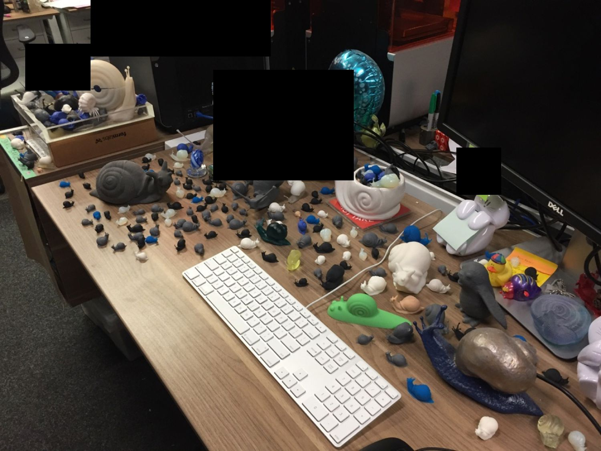

My Last Day
I woke up today feeling like it was just any other day. Per usual on Fridays, I stopped by Union Square Donuts on my way to the office and ate it with gloved hands as soon as I arrived. But today was different than any other Friday. Today was my last day at Formlabs—at least for eight weeks.
At the end of the day, my teammates gathered around the center table with delicious Elmondorf chocolate cookies that had bought for me to celebrate. Unlike the typical cake or cookies gathering for a departing formling, we all knew that I am not leaving forever, so it felt more upbeat. It was a nice sendoff, and I am grateful to have such wonderful co-workers.
Before leaving, I arranged my desk as I used to before taking a vacation—covered in snails. Due to the sensitive nature of my work, some things are [redacted]. A few fun snails to point out.
- Just below the center black box, you'll see a snail with a white shell and a clearish body. From our new engineering line of materials, the shell is made from rigid resin and the body from elastic. It more resembles a snail than any other I have printed. Fun fact: we have wanted to develop an elastic-like resin since 2013.
- The blue snails scattered about are my experimentations with color kit. It's my favorite resin in our Form X line. Colors are fun.
- The big snail at bottom right is the largest snail I could fit within the Form 2 build volume. During a paint night at work, I made it colorful.
- The big gray snail near the top left is an early Fuse 1 print from about a year ago. Unlike all the other 3D printed snails in this image, it is made using SLS, a process that fuses nylon powder.
- The big, white odd looking snail at the top left is a gift from a co-worker for Secret Santa a few years ago. The top of the hollow shell comes off and it is filled with smaller snails.
